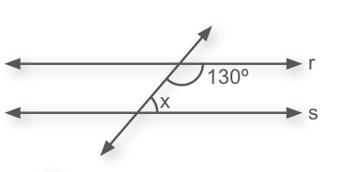
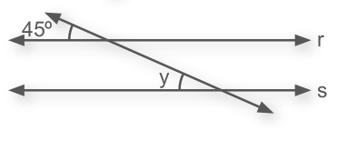
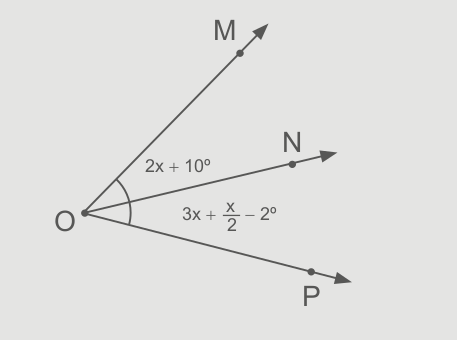

CAPÍTULO 4 - Ângulos formados por retas paralelas com uma transversal
Observe a seguir a representação de algumas ruas da cidade de Curitiba, capital do Paraná.
1. Observe no mapa a localização das ruas Paula Gomes e Presidente Carlos Cavalcanti. Troque ideias com um colega e escrevam, no caderno, como podemos descrever a posição relativa entre elas.

a) Como poderíamos descrever a posição relativa da Rua João Manoel em relação às ruas Paula Gomes e Presidente Carlos Cavalcanti?
Vamos representar essas ruas por duas retas paralelas cortadas por uma reta transversal. Observe:
A reta t determina, sobre as retas r e s, oito ângulos.
Veremos, agora, as relações existentes entre esses ângulos.
209
UNIDADE 6 - CAPÍTULO 4
Ângulos correspondentes

Usando o transferidor, podemos perceber que os ângulos de mesma cor têm a mesma medida. Esses ângulos congruentes são denominados ângulos correspondentes.
Portanto, são ângulos correspondentes: â e ê, b̂ e f̂ , d̂ e ĥ e ĉ e ĝ.
Temos ainda que:

Os ângulos â, b̂, ĥ e ĝ são ângulos externos às retas r e s e os ângulos d̂, ĉ, ê e f̂ são ângulos internos às retas r e s.
Vamos considerar:
a = med (â)
b = med (b̂)
c = med (ĉ)
d = med (d̂)
e = med (ê)
f = med (f̂)
g = med (ĝ)
h = med (ĥ)
210
UNIDADE 6 - CAPÍTULO 5
Tomando como base esses ângulos, temos as seguintes relações:
Ângulos alternos
Os ângulos â e d̂, assim como ê e f̂ são suplementares, portanto, a + d = 180º e e + f = 180º. Logo, a + d = e + f.
Como a = e (ângulos correspondentes) e a + d = e + f, temos que d = f.
Os ângulos d̂ e f̂ são denominados ângulos alternos internos e são congruentes. Da mesma forma, os ângulos ĉ e ê, são alternos internos, por- tanto temos que d̂ ≡ f̂ e ĉ ≡ ê.
Vamos considerar agora os ângulos de medidas a, e e g.
Os ângulos â e ê são correspondentes, portanto, são congruentes. Os ângulos ê e ĝ são opostos pelo vértice e por isso são congruentes. Desta forma, temos que se â ≡ ê e ê ≡ ĝ, então â ≡ ĝ.
Os ângulos â e ĝ são denominados ângulos alternos externos e são congruentes. Da mesma forma, os ângulos b̂ e ĥ, são alternos externos, portanto, temos que â ≡ ĝ e b̂ ≡ ĥ.
Ângulos colaterais
211
UNIDADE 6 - CAPÍTULO 4
Os ângulos â e d̂ são suplementares, portanto a + d = 180º e a = e, pois são ângulos correspondentes. Logo, d + e = 180º.
Os ângulos d̂ e ê são denominados ângulos colaterais internos e são suplementares. Da mesma forma, os ângulos ĉ e f̂ são colaterais internos, portanto, temos que d + e = 180º e c + f = 180º.
Vamos considerar agora os ângulos de medidas b, f e g.
Os ângulos b̂ e f̂ são correspondentes, logo são congruentes, por isso temos b = f. Os ângulos f̂ e ĝ são suplementares, portanto f + g = 180º. Desta forma, podemos concluir que b + g = 180º.
Os ângulos b̂ e ĝ, são denominados ângulos colaterais externos e são suplementares. Da mesma forma, os ângulos â e ĥ são colaterais externos, portanto, temos que b + g = 180º e a + h = 180º.
ENCONTRE SOLUÇÕES
1. Observe a figura e escreva, em seu ca- derno, como são chamados os pares de ângulos, sabendo que r // s e t // u.
a) â e ĉ
b) f̂ e ĝ
c) ĥ e b̂
d) ê e ĝ
e) f̂ e b̂
f) d̂ e ĝ
2. Sendo r // s, escreva, em seu caderno, a medida dos ângulos assinalados nas figuras.
a)
b)
c)

d)

212
UNIDADE 6 - CAPÍTULO 4
3. Dadas duas retas paralelas cortadas por uma transversal, dois ângulos correspondentes são expressos, em graus, por 2x - 40º e x + 20º. Determine as medidas desses ângulos.
4. Calcule, em seu caderno, as medidas dos ângulos indicados nas figuras.
a) r // s
b) r // s
c) t // u
d) m // n
5. Dadas duas retas paralelas cortadas por uma transversal, dois ângulos colaterais externos são tais que a medida do maior ângulo é igual ao triplo da medida do menor. Calcule as medidas desses ângulos.
6. A diferença entre dois ângulos colaterais internos é igual a 72º. Calcule, em seu caderno, as medidas desses ângulos.
7. Calcule, em seu caderno, a medida do ângulo x, sendo r // s.
8. Sabendo que as retas t e u são paralelas, determine os valores de a, b e c.
9. Nesta figura, os pontos A, B e C estão em uma reta. \(\overline{EF}\) e \(\overline{CD}\) são paralelos. Quanto mede o ângulo BĈD?
10. Na figura, as retas r, s e t são parale- las. Determine as medidas dos ângulos a, b e c.
213
UNIDADE 6 - CAPÍTULO 4
Construindo retas paralelas cortadas por uma transversal com softwares
Usando o GeoGebra vamos construir duas retas paralelas cortadas por uma transversal e investigar se as relações que estudamos entre as medidas dos ângulos valem para quaisquer retas paralelas cortadas por uma transversal.
Veja os passos:
a) Inicialmente vamos traçar a reta \(\overline{AB}\). Selecionar no menu superior a opção “Reta”. Clique na área em branco para construir a reta.


b) Usando a ferramenta de construir retas paralelas no menu superior, trace a reta \(\overline{CD}\) paralela à \(\overline{AB}\) .

c) Trace uma reta \(\overline{EF}\) transversal entre as retas \(\overline{AB}\) e \(\overline{CD}\) .

d) Marque o ponto G como o ponto de interseção entre as retas \(\overline{AB}\) e \(\overline{EF}\) e, o ponto T como o ponto de intersecção entre as retas \(\overline{CD}\) e \(\overline{EF}\) . Para isto, utilize a ferramenta “Interseção de Dois Objetos”.

214
UNIDADE 6 - CAPÍTULO 4
1. Com um colega, utilize a ferramenta de medir ângulos do software e, juntos, meçam os ângulos dos oito ângulos formados pelas retas paralelas, cortadas pela transversal. Anotem as medidas encontradas em seus cadernos.
2. Identifiquem quais os pares de ângulos que são correspondentes, opostos pelo vértice, colaterais internos e externos.
3. Com o auxílio da ferramenta de mover a reta, movimentem a reta transversal sobre as retas paralelas e verifiquem se as medidas encontradas se mantêm. Também é possível movimentar uma das retas paralelas. Façam essas investigações e verifiquem as medidas encontradas.
PROBABILIDADE E ESTATÍSTICA
► Qual é a probabilidade?
O clube em que Lucas é sócio irá promover uma prova de ciclismo reunindo vários outros clubes. No quadro a seguir, temos a quantidade de ciclistas que irão participar representando os seus clubes.

Qual é a probabilidade de o vencedor desta prova ser um ciclista do Minas Clube?
Para sabermos esta probabilidade precisamos considerar a ocorrência deste resultado. Note que dentre 50 ciclistas que irão participar da prova, 18 são do Minas Clube.
Para calcularmos a probabilidade do vencedor ser deste clube, devemos dividir o número de atletas que irão representar o clube pelo número total de com- petidores.
18/50 = 0,36 = 36%
Desta forma, a probabilidade do vencedor ser um ciclista do Minas Clube é de 36%.
Agora é com você!
1. Em seu caderno, calcule a probabilidade do vencedor ser um ciclista dos demais clubes.
215
UNIDADE 6 - CAPÍTULO 4
RELEMBRE
1. (Saresp) O movimento completo do limpador do para-brisa de um carro corresponde a um ângulo raso. Na situação descrita pela figura, admita que o limpador está girando em sen- tido horário e calcule a medida do ângulo que falta para que ele com- plete o movimento completo.

a) 50º
b) 120º
c) 140º
d) 160º
2. A quarta parte de um ângulo mede 12º 24’. Quanto mede esse ângulo?
3. Três quartos de 41º 28’ correspondem a:
a) 10º 7’
b) 10º 22’
c) 30º 6’
d) 31º
e) 31º 6’
4. O menor ângulo formado pelos ponteiros de um relógio que marca 3 horas é:
a) agudo;
b) reto;
c) obtuso;
d) raso.
5. Dado um ângulo x, a terça parte da medida do seu complemento é um ângulo igual a:
a) 30º
b) 90º - x
c) \(\dfrac{90° - x}{3}\)
d) 180° - x
e) \(\dfrac{180° - x}{3}\)
6. Determine a medida do complemento e do suplemento de um ângulo de 52º 30’.
7. A diferença entre o suplemento e o complemento de um ângulo qualquer é igual a:
a) 180º
b) 120º
c) 90º
d) 60º
e) 30º
8. Dois ângulos opostos pelo vértice medem 2x + 25º e 3x - 5º. Qual é a medida de um dos ângulos?
9. O dobro da medida de um ângulo é igual a 53º 24’. Determine a medida do seu suplemento.
10. Sabendo que \(\overline{ON}\) é bissetriz do ângulo dado, calcule o valor de x.
11. O suplemento de um ângulo a mede 134º. Determine a medida do complemento desse ângulo.
216
UNIDADE 6 - CAPÍTULO 4
12. Determine as medidas dos ângulos que formam o ângulo de 360º.
13. Na figura abaixo, a, b, c, d e e representam medidas de ângulos, sendo a um ângulo reto. Leia as afirmações a seguir, em relação à figura.
I. b = e
II. c = e
III. a = d
IV. c + d = d + e
V. b + c = 90°
Das afirmações:
a) apenas I, II e V são verdadeiras;
b) apenas III e IV são verdadeiras;
c) apenas I e III são falsas;
d) apenas II e IV são falsas;
e) todas são verdadeiras.
14. (UTFPR) A medida de x em graus vale:
a) 50
b) 45
c) 100
d) 145
e) 0
15. Determine a medida de m.

16. Resolva as seguintes operações em seu caderno:
a) 36º + 27º 31’
b) 89º 35’ 48” + 11º 28’ 19”
c) 67º 45’ 28” - 19º 22’ 8”
d) 105º - 75º 44’
e) 38º 47’ - 21º 15’ 33”
17. Sabendo que m = 26º 2’, n = 81º 34’ 52” e p = 57º 13’, calcule:
a) m + n + p
b) n - m
c) n - p
d) 2 ∙ m
e) 3 ∙ n
f) 4 ∙ p
g) 2 ∙ m + 3 ∙ n
217
UNIDADE 6 - CAPÍTULO 4
18. (UTFPR) Dois ângulos são suplementares. A medida de um é o triplo da medida do outro. Quanto mede o maior ângulo?
a) 22° 15’
b) 45°
c) 135°
d) 66° 45’
e) 35°
19. Nas figuras a seguir, a e b representam medidas em graus. Determine essas medidas em cada uma das situações.
a)
b)

c)
d)

e)

f)

g)

20. Se um ângulo é igual ao dobro do seu ângulo complementar, então a medida desse ângulo, em graus, é igual a:
a) 15.
b) 30.
c) 45.
d) 60.
e) 90.
218
UNIDADE 6 - CAPÍTULO 4
21. As retas r e s são paralelas e t e u, transversais. Determine o valor de α + β.

22. Na figura a seguir, r // s. Nessas condições, o número que expressa a medida b, em graus, é um:

a) número divisível por 3;
b) número ímpar;
c) número primo;
d) número divisível por 25.
23. Uma reta transversal intersecta duas retas paralelas, formando um par de ângulos alternos internos cujas medidas são 4x + 4º e 6x - 24º. Quanto vale a soma das medidas desses ângulos?
24. Sendo a reta t paralela à reta u, o valor de a é:
a) 120º
b) 100º
c) 60º
d) 40º
25. Uma transversal intersecta duas re- tas paralelas, formando um par de ângulos colaterais externos cujas medidas são b + 32º e 3b - 12º. Cal- cule a diferença entre as medidas desses ângulos.
26. Quatro retas paralelas determinam sobre uma transversal segmentos de 3 cm, 4 cm e 5 cm. Sobre a outra transversal, elas determinam seg- mentos cuja soma das medidas dos três é igual a 39 cm. Calcule a medi- da dos três segmentos da segunda transversal.
27. (FEI-SP) Na figura, \(\overline{DE}\)//\(\overline{BC}\) .
Então o valor de x é:
a) \(\dfrac{15}{2}\)
b) 9
c) 10
d) \(\dfrac{19}{3}\)
e) 12
219
UNIDADE 6 - CAPÍTULO 4